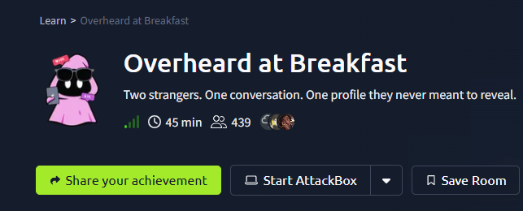
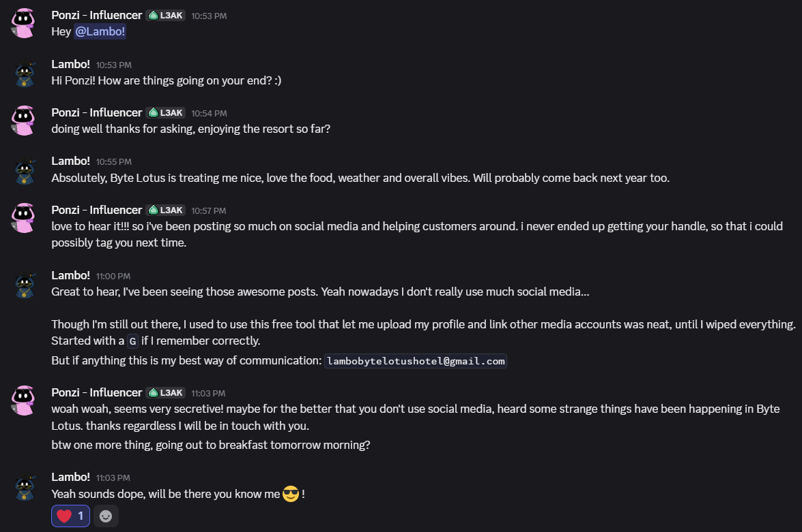
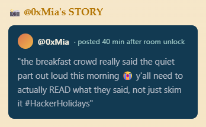
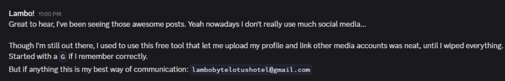
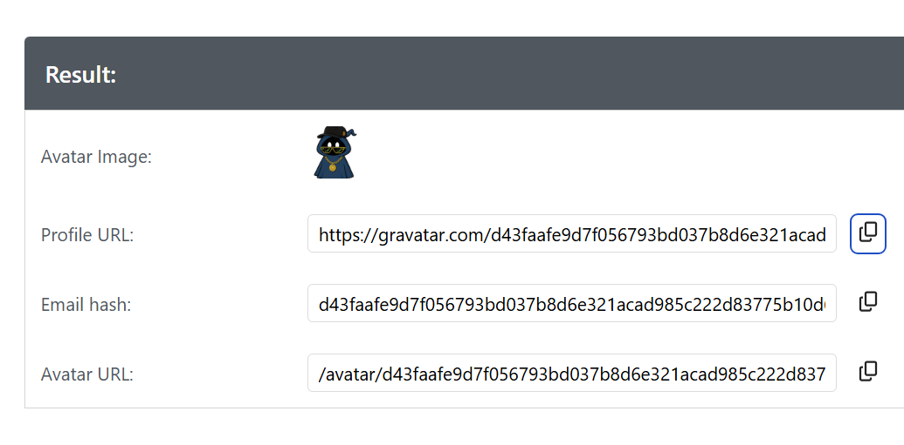
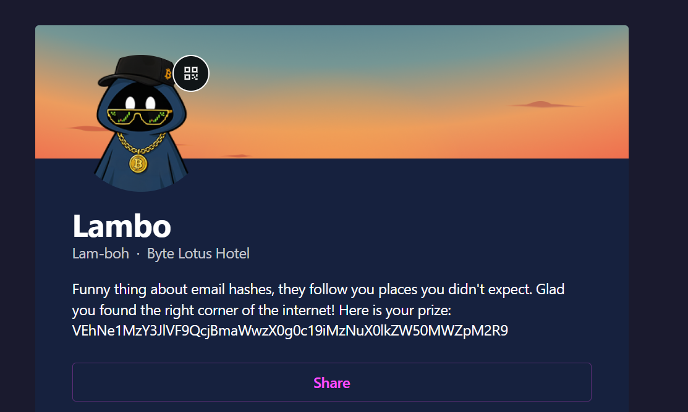

Challenge Description
The breakfast terrace is loud this morning, clinking cutlery, espresso machines, the usual chatter. One guest couldn't help but linger at a nearby table, seeing more of a conversation than they were meant to.
When the table's occupant stepped away for a refill, they seized the moment and grabbed a screenshot before it could disappear. Somewhere in that conversation is enough to track down an account nobody was supposed to find.
We're given a screenshot of a Slack-style conversation between two users, Ponzi - Influencer and Lambo!

plus a social media post from @0xMia:

This hint tells us the important detail isn't obvious , we need to read the conversation carefully rather than skim it.
Step 1; Analyze the Conversation
Reading through the chat, Ponzi asks Lambo for a way to contact/tag them since Lambo doesn't use social media much anymore. Lambo responds:

Two clues stand out here:
- A free tool starting with "G" that lets you upload a profile picture and link other social media accounts to it.
- An email address: lambobytelotushotel@gmail.com
The tool being described is gravatar, a free Automattic service that ties a public profile (avatar, bio, and linked social accounts) to the hash of an email address.
Step 2; Search the Email
Using graver to check the email mentioned in conversation we see profile, email and avatar url.

Step 3; Locate the Hidden Profile
Using the SHA-256 hash, the corresponding Gravatar profile is reachable at:
https://gravatar.com/d43faafe9d7f056793bd037b8d6e321acad985c222d83775b10d6539e301e931
This resolves to a still-active profile for "Lambo" (Byte Lotus Hotel) the "account nobody was supposed to find" referenced in the challenge brief, and exactly matching @0xMia's hint about people not reading closely enough.
The profile bio reads:

Step 4; Decode the Prize
The string in the bio is Base64-encoded:
bash
echo "VEhNe1MzY3JlVF9QcjBmaWwzX0g0c19iMzNuX0lkZW50MWZpM2R9" | base64 -d
Flag
THM{S3creT_Pr0fil3_H4s_b33n_Ident1fi3d}Key takeaway:
Email-to-Gravatar hash lookups are a classic OSINT technique , even after a user believes they've deleted their footprint, an old email address can still resolve to a cached or still-live profile, exposing identity and personal details.